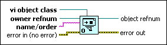
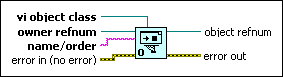

Open VI Object Reference Function
Owning Palette: VI Scripting VI and Functions
Requires: VI Scripting
Opens a reference to the object whose label you specify with the name/order input.

 Add to the block diagram Add to the block diagram |
 Find on the palette Find on the palette |
Owning Palette: VI Scripting VI and Functions
Requires: VI Scripting
Opens a reference to the object whose label you specify with the name/order input.

| Add to the block diagram |
Find on the palette |
 |
vi object class indicates the class of object whose reference you wish to obtain. To specify a class type, wire a class specifier constant to this input. A class specifier constant displays a hierarchical menu that contains the classes of all of the objects in LabVIEW. You can navigate this hierarchy to find the class of the object you need to reference. This function also uses vi object class to determine the type of reference returned by object refnum. For example, if you wire a Boolean-typed Class Specifier Constant to vi object class, the returned object refnum changes to a Boolean reference. |
|
owner refnum is a reference to the owner of the object whose reference you want to obtain. The owner must be a front panel, a cluster, a block diagram, or a structure diagram. For example, to obtain a reference for a control on the front panel, wire a reference to the front panel to owner refnum. Likewise, to obtain a reference for an object inside a For Loop, wire a reference to the diagram of the For Loop to owner refnum. |
 |
name/order indicates the object whose reference you want to obtain. name/order must match the label of the desired object. If you are obtaining the reference for an object within a cluster, you can use an array of strings that contain the names of the container hierarchy. |
 |
error in describes error conditions that occur before this node runs. This input provides standard error in functionality. |
 |
object refnum returns a reference to the object that matches both the class specified by vi object class and the label specified by name/order. This reference is of the class specified by vi object class. |
 |
error out contains error information. This output provides standard error out functionality. |
Use the Open VI Object Reference function to obtain a reference to any labeled object in a target VI. To obtain a reference to an object whose label is not known, you must navigate to the object from a known reference or use the Traverse for GObjects VI instead.
 | Note You cannot use the Open VI Object Reference function to open a reference to a pane on the front panel. Instead, use the Traverse for GObjects VI or the Pane[] property to return an array of references to all the panes on the front panel, and then find the appropriate reference by the name of the pane. |
Block diagram objects do not display a label by default. Because the Open VI Object Reference function uses the label to locate the desired object, you must display the label of an object at least once before the function can find the object. You can display the label of any block diagram object by selecting Visible Items»Label from the shortcut menu of the object.
If two objects in the target code have the same label, Open VI Object Reference returns a reference to only one of the two objects. To predictably obtain the desired object reference, use unique labels for objects of interest in target code.
The Open VI Object Reference function does not search nested objects within the owner. For example, if you specify a block diagram to be the owner of the object you want to find, the Open VI Object Reference function does not search inside of For Loops on that block diagram. To use the Open VI Object Reference function to obtain a reference to an object within a For Loop, you must specify the relevant For Loop to be the owner of the object.